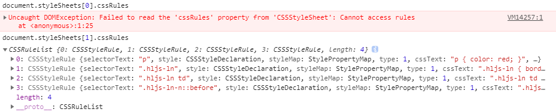

重学前端 - 浏览器部分-CSSDOM
CSSOM API 的基本用法
一般来说，我们需要先获取文档中所有的样式表：
document.styleSheets
document 的 styleSheets 属性表示文档中的所有样式表，这是一个只读的列表，我们可以用方括号运算符下标访问样式表，也可以使用 item 方法来访问，它有 length 属性表示文档中的样式表数量。
重学前端-CSS部分-CSSDOM
操作
我们虽然无法用 CSSOM API 来创建样式表，但是我们可以修改样式表中的内容（数字参数表示索引）。
document.styleSheets[0].insertRule("div {border:1px solid blue}",0)
document.styleSheets[0].removeRule(5)
执行后，页面样式会发生对应变化，但并不会在style标签对应的位置真的插入样式代码。
cssRules属性
更进一步，我们可以获取样式表中特定的规则（Rule），并且对它进行一定的操作，具体来说，就是使用它的 cssRules 属性来实现：

在chrome上测试发现，link标签引入的css文件样式，cssRules无法读取，因此也无法操作（insertRule，removeRule等无效），只可以操作style标签内的内联样式。
计算属性
CSSOM 还提供了一个非常重要的方法，来获取一个元素最终经过 CSS 计算得到的属性：
window.getComputedStyle(elt, pseudoElt);
其中第一个参数就是我们要获取属性的元素，第二个参数是可选的，用于选择伪元素。
CSSOM View
窗口API
窗口 API 用于操作浏览器窗口的位置、尺寸等（方法在window下调用）。
moveTo(x, y) 窗口移动到屏幕的特定坐标；
moveBy(x, y) 窗口移动特定距离；
resizeTo(x, y) 改变窗口大小到特定尺寸；
resizeBy(x, y) 改变窗口大小特定尺寸。
还规定了 window.open() 的第三个参数：
window.open("about:blank", "_blank" ,"width=100,height=100,left=100,right=100" )
一些浏览器出于安全考虑没有实现，也不适用于移动端浏览器，简单了解即可
滚动 API
视口滚动 API
可视区域（视口）滚动行为由 window 对象上的一组 API 控制，我们先来了解一下：
scrollX 是视口的属性，表示 X 方向上的当前滚动距离，有别名 pageXOffset；
scrollY 是视口的属性，表示 Y 方向上的当前滚动距离，有别名 pageYOffset；
scroll(x, y) 使得页面滚动到特定的位置，有别名 scrollTo，支持传入配置型参数 {top, left}；
scrollBy(x, y) 使得页面滚动特定的距离，支持传入配置型参数 {top, left}。
通过这些属性和方法，我们可以读取视口的滚动位置和操纵视口滚动。不过，要想监听视口滚动事件，我们需要在 document 对象上绑定事件监听函数：
document.addEventListener("scroll", function(event){
//......
})
视口滚动 API 是页面的顶层容器的滚动，大部分移动端浏览器都会采用一些性能优化，它和元素滚动不完全一样。
元素滚动 API
在 Element 类（参见 DOM 部分），为了支持滚动，加入了以下 API。
scrollTop 元素的属性，表示 Y 方向上的当前滚动距离。
scrollLeft 元素的属性，表示 X 方向上的当前滚动距离。
scrollWidth 元素的属性，表示元素内部的滚动内容的宽度，一般来说会大于等于元素宽度。
scrollHeight 元素的属性，表示元素内部的滚动内容的高度，一般来说会大于等于元素高度。
scroll(x, y) 使得元素滚动到特定的位置，有别名 scrollTo，支持传入配置型参数 {top, left}。
scrollBy(x, y) 使得元素滚动到特定的位置，支持传入配置型参数 {top, left}。
scrollIntoView(arg) 滚动元素所在的父元素，使得元素滚动到可见区域，可以通过 arg 来指定滚到中间、开始或者就近。
除此之外，可滚动的元素也支持 scroll 事件，我们在元素上监听它的事件即可：
element.addEventListener("scroll", function(event){
//......
})
布局 API
全局尺寸信息
window 对象上提供了一些全局的尺寸信息，它是通过属性来提供的:

window.innerHeight, window.innerWidth 这两个属性表示视口的大小。
window.outerWidth, window.outerHeight 这两个属性表示浏览器窗口占据的大小，很多浏览器没有实现，一般来说这两个属性无关紧要。
window.devicePixelRatio 这个属性非常重要，表示物理像素和 CSS 像素单位的倍率关系，Retina 屏这个值是 2，后来也出现了一些 3 倍的 Android 屏。
window.screen （屏幕尺寸相关的信息）
window.screen.width, window.screen.height 设备的屏幕尺寸。
window.screen.availWidth, window.screen.availHeight 设备屏幕的可渲染区域尺寸，一些 Android 机器会把屏幕的一部分预留做固定按钮，所以有这两个属性，实际上一般浏览器不会实现的这么细致。
window.screen.colorDepth, window.screen.pixelDepth 这两个属性是固定值 24，应该是为了以后预留。
以上比较有用的只有三个：innerHeight、innerWidth 和 devicePixelRatio
元素的布局信息
首先应该从脑中消除“元素有宽高”这样的概念，有些元素可能产生多个盒，事实上，只有盒有宽和高，元素是没有的。
所以我们获取宽高的对象应该是“盒”，于是 CSSOM View 为 Element 类添加了两个方法：
getClientRects(): 返回一个列表，里面包含元素对应的每一个盒所占据的客户端矩形区域，这里每一个矩形区域可以用 x, y, width, height 来获取它的位置和尺寸。
document.getElementById("wrap").getClientRects()[0] //结果： {bottom: 342 height: 42 left: 0 right: 819 top: 300 width: 819 x: 0 y: 300}getBoundingClientRect(): 这个 API 的设计更接近我们脑海中的元素盒的概念，它返回元素对应的所有盒的包裹的矩形区域，需要注意，这个 API 获取的区域会包括当 overflow 为 visible 时的子元素区域
document.getElementById("wrap").getBoundingClientRect() //结果： {bottom: 300 height: 0 left: 0 right: 819 top: 300 width: 819 x: 0 y: 300}
两个api通常情况下计算结果是一致的。
这两个 API 获取的矩形区域都是相对于视口的坐标，这意味着，这些区域都是受滚动影响的。
如果我们要获取相对坐标，或者包含滚动区域的坐标，需要一点小技巧：
var offsetX = document.documentElement.getBoundingClientRect().x - element.getBoundingClientRect().x;